Comunicação que influencia. Estratégia que decide. Combinamos dados, IA e experiência política para contar histórias que mobilizam e influenciam o debate público.
O povo venceu de novo
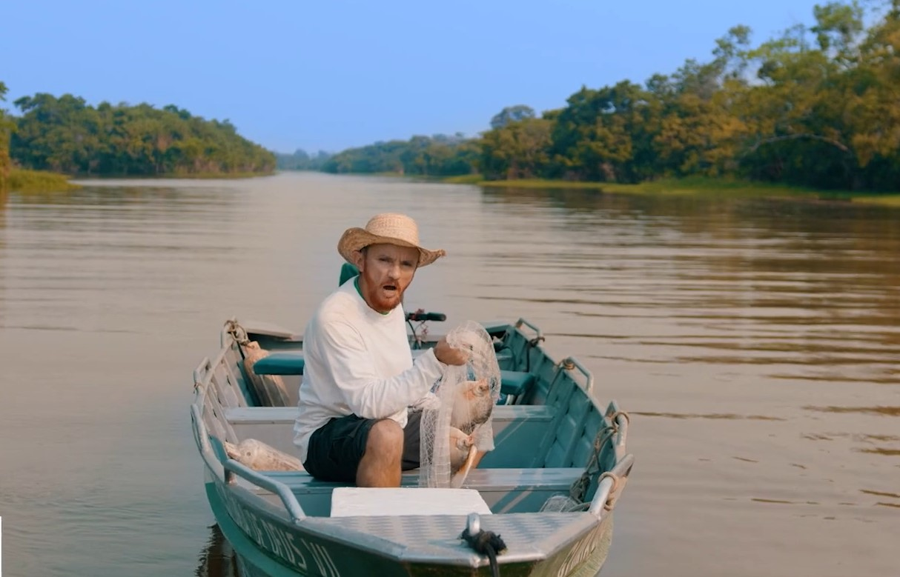
Veja a campanha aquiVeja a campanha aqui
Veja a campanha aqui
Campanha de reeleição começa no início do mandato. Não foi as o governador do Amazonas, Wilson Lima. Por causa da pandemia e de sabotagens do grupo que governou antes, Wilson só conseguiu mostrar trabalho a partir da metade de seu primeiro mandato. Mas foram dois anos que valeram por quatro. De azarão, Wilson passou a liderar todas as pesquisas, antes mesmo de a campanha começar. Daí em diante, era só não errar. Não erramos. No final de outubro, com quase 60 por cento dos votos válidos, Wilson Lima foi reeleito governador do Amazonas.
Bora mudar Maceió?
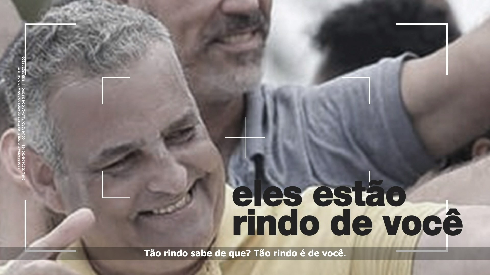
Veja a campanha aquiVeja a campanha aqui
Em 2020, Maceió queria mudar. Queria um prefeito moderno, preparado, independente, próximo às pessoas – tudo isso pra já. Ajudei a formular a estratégia de marketing, participei da criação da campanha e escrevi roteiros de peças publicitárias exibidas na TV e na internet. JHC deu uma pisa nos adversários – e botou a velha política pra fora da prefeitura.
Dia cinza
Veja a campanha aqui
Veja a campanha aqui
Droga é um tema delicado. Dialogar com jovem sobre isso é mais delicado ainda. Por isso, essa campanha, realizada em parceria com a agência Fields360, não tem cara de campanha. Fenômeno no YouTube, com sucessos que atingem 250 milhões de visualizações, a banda Melim lançou a música Dia Cinza contando a história real de um jovem envolvido com drogas. Após o engajamento de seus seguidores, veio a revelação: era uma campanha do Ministério da Cidadania alertando para o risco de usar drogas. Por ser incomum, a campanha produziu mídia espontânea e atingiu outros públicos na internet, no rádio e na televisão.
O povo escolheu o novo
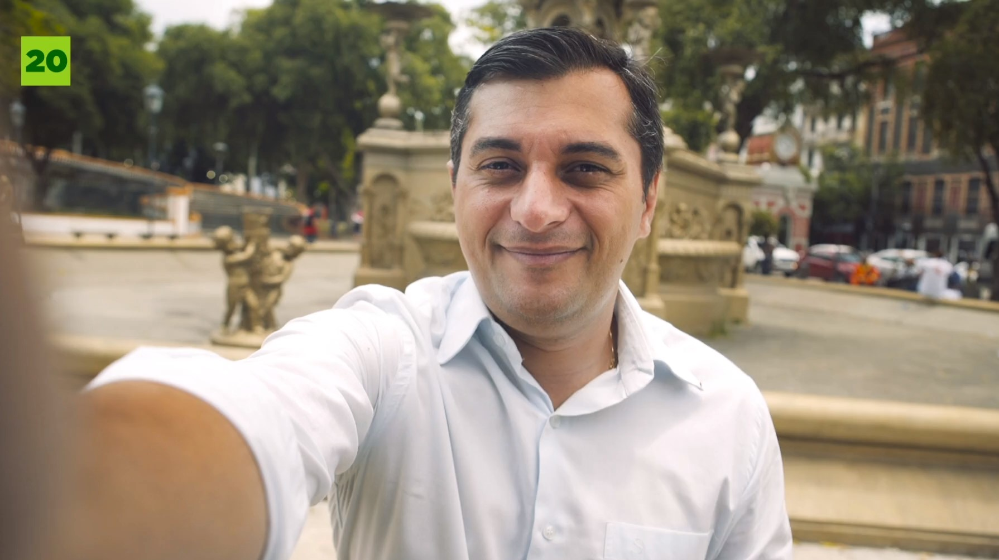
Veja a campanha aqui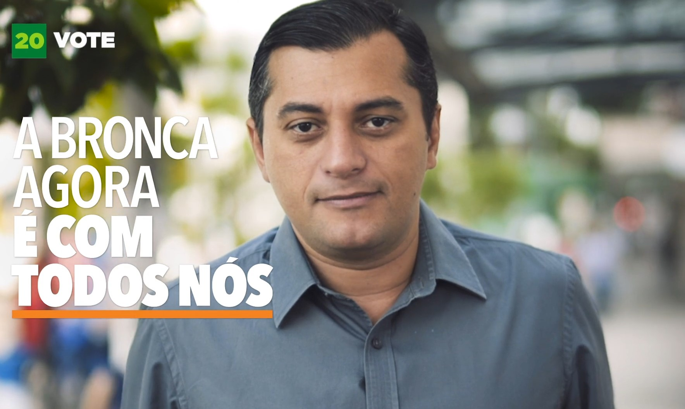
Veja a campanha aqui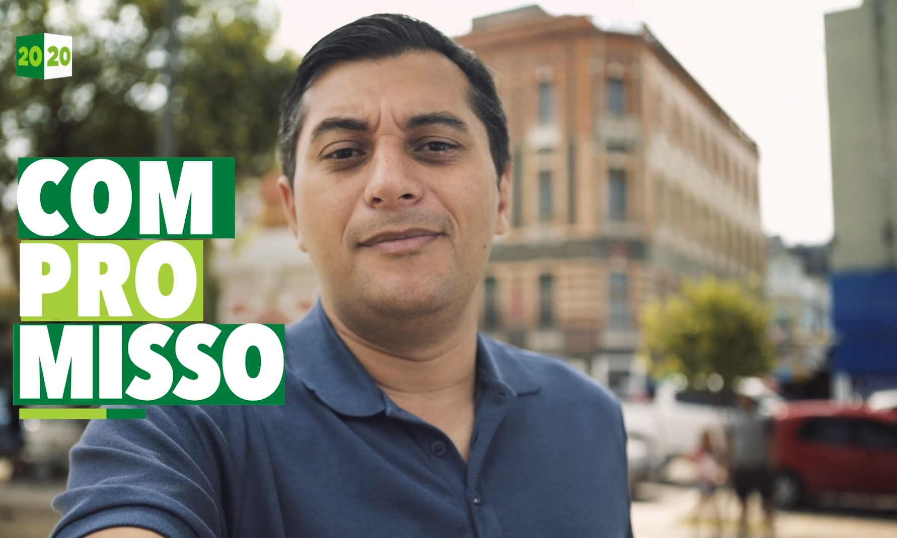
Veja a campanha aqui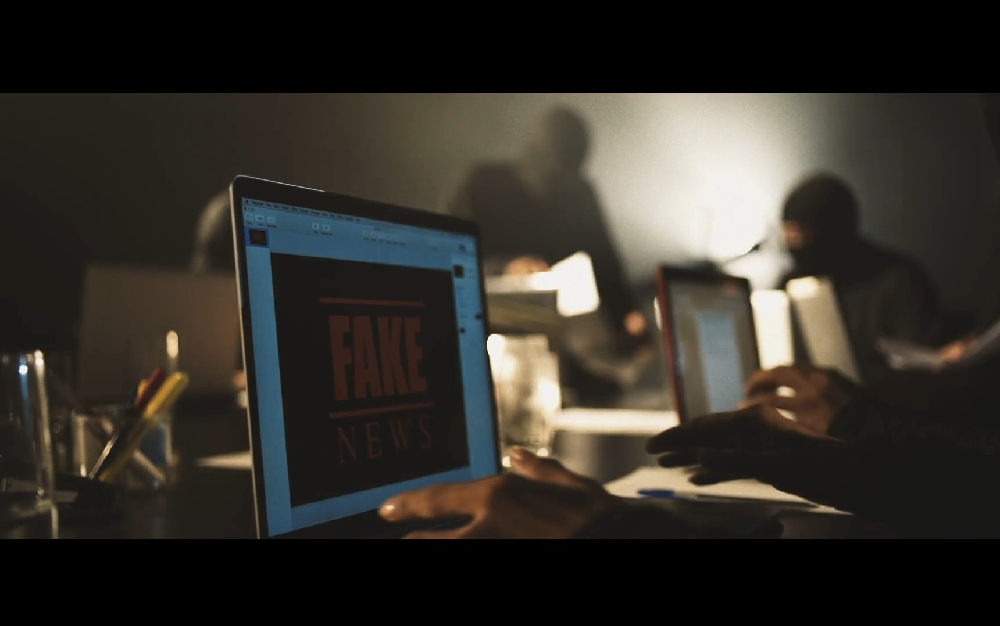
Veja a campanha aqui
Em 2018, o jornalista Wilson Lima surpreendeu ao avançar para o segundo turno em pé de igualdade com o adversário, que pretendia governar o Amazonas pela quarta vez. Mas o confronto direto deixou ainda mais evidente a diferença entre a velha e a nova política. Selfie-vídeos, conversa franca e propostas realistas, ajudaram a eleger Wilson Lima governador do Amazonas com quase 20 pontos de vantagem sobre Amazonino Mendes.
Mudança de verdade
Veja a campanha aqui
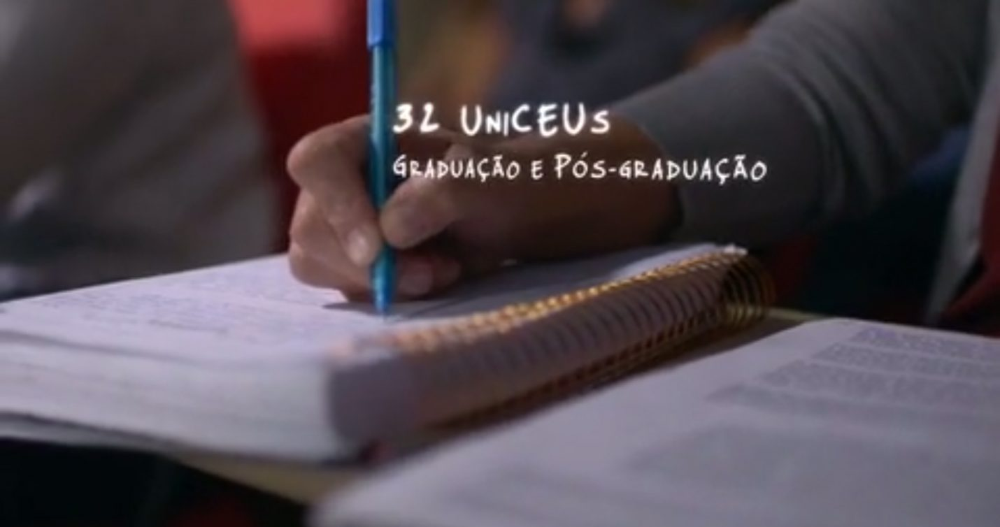
Veja a campanha aqui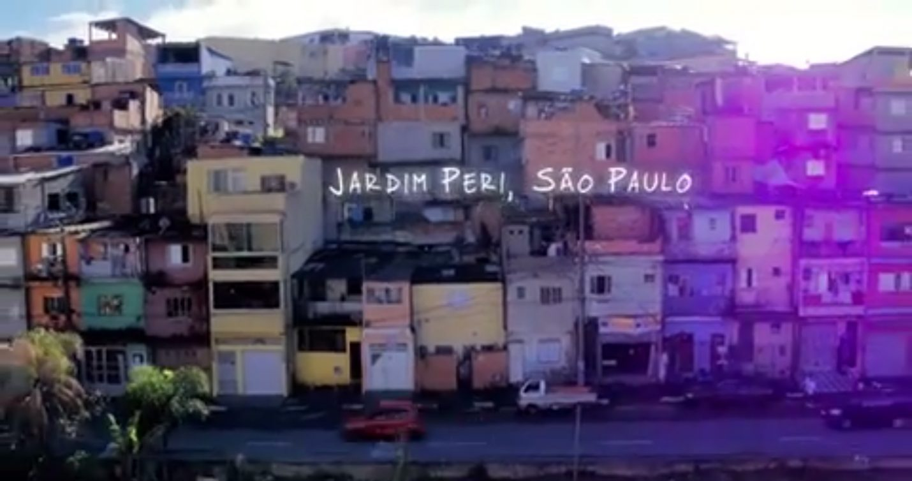
Veja a campanha aqui
Cidade com nome de santo. Onde o tempo é sagrado. Onde tudo acontece primeiro. Esta campanha, criada por mim e pelo jornalista Chico Mendez para a agência Nova S/B, é uma homenagem à maior metrópole da América Latina. Filmes, spots de rádio e peças para a internet destacam mudanças que humanizaram e modernizaram São Paulo. Tudo contado pelos próprios moradores da terra da garoa.
Quanto mais cuidado, mais futuro
Quanto mais cuidado, mais futuro
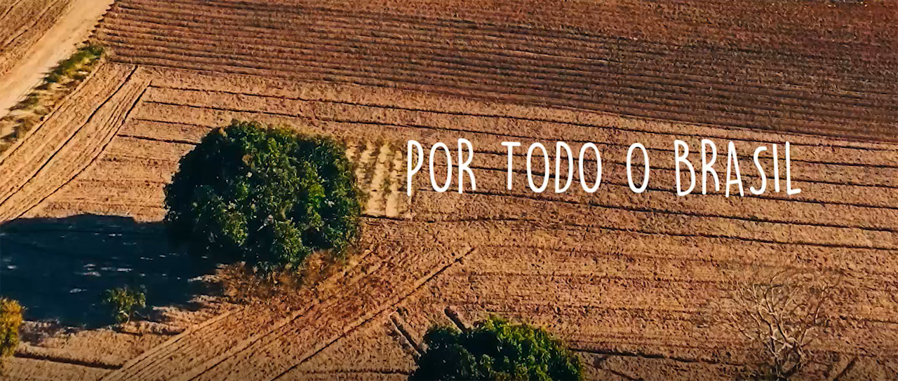
Veja a campanha aqui
O Prêmio Nobel de Economia, James Heckman, provou que estímulos no início da vida são decisivos para o sucesso na vida adulta. Essa é a ideia central do Criança Feliz, um programa social que ajuda milhares de famílias a promover o desenvolvimento de seus filhos. Esta campanha (na internet, no rádio, na TV e nas milhares de cidades que receberam o projeto) foi feita em parceria com a agência Fields360 para marcar o lançamento do Criança Feliz.
Agora é ela
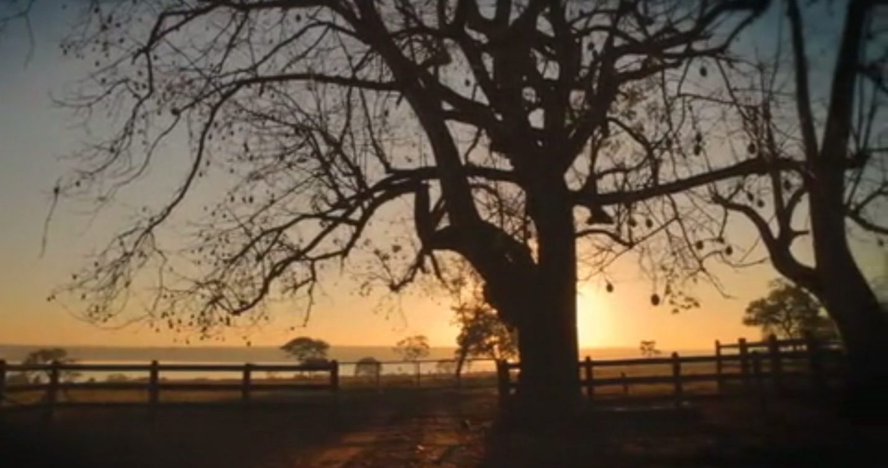
Veja a campanha aqui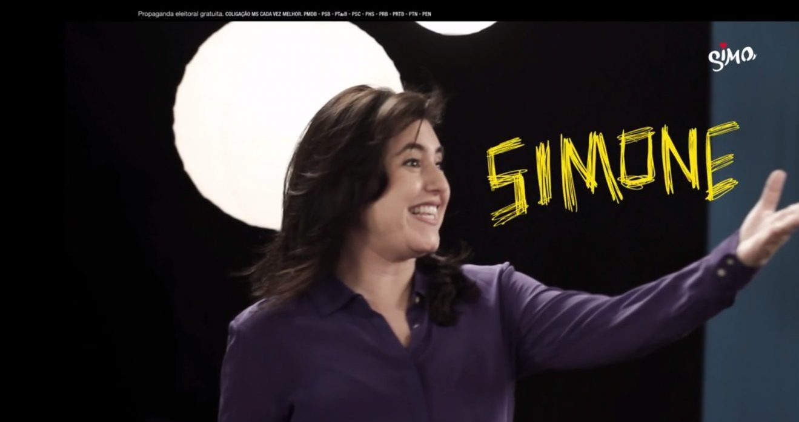
Veja a campanha aqui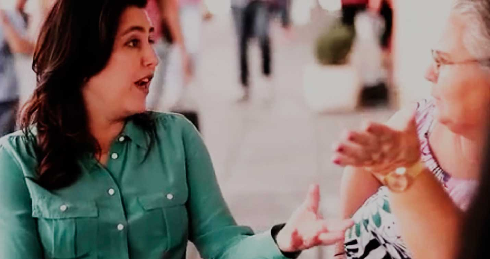
Veja a campanha aqui
Filha de político, Simone Tebet construiu uma carreira com luz própria no Mato Grosso do Sul. Ela foi professora, advogada, prefeita e vice-governadora. Em 2014, Simone decidiu dar um passo ainda mais ousado: disputar uma vaga no Senado. Nessa campanha, coordenei uma equipe de cerca de 50 pessoas. Fomos responsáveis pela estratégia e por todo o conteúdo veiculado na TV, no rádio e na internet. E o povo disse sim para Simone — eleita com 52% dos votos válidos.
Vamos conversar?
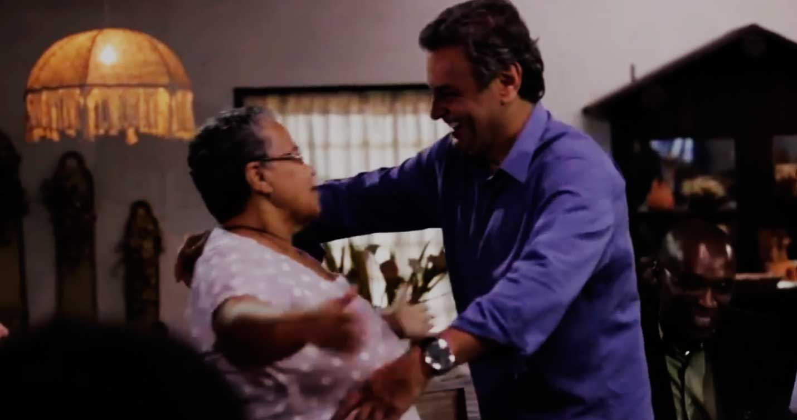
Veja a campanha aqui
Em 2013, Aécio Neves estava prestes a assumir a presidência do PSDB. Em vez de discurso, era hora de conversar com os brasileiros. Prestei consultoria para a formulação da nova estratégia de marketing, que inovou ao unir a mídia tradicional às novas mídias sociais. Ao convidar os brasileiros para o diálogo, Aécio consolidou sua candidatura à Presidência da República.
Orgulho de ser goiano
Marconi Perillo tinha um enorme desafio em 2010: derrotar um adversário histórico para voltar ao governo de Goiás pela quarta vez. Eu queria muito vencer a primeira eleição que disputava como “marqueteiro político”. Na coordenação de marketing da campanha, ajudei a definir a estratégia, escrevi roteiros para a televisão e treinei o candidato para os debates. Deu Marconi de novo.